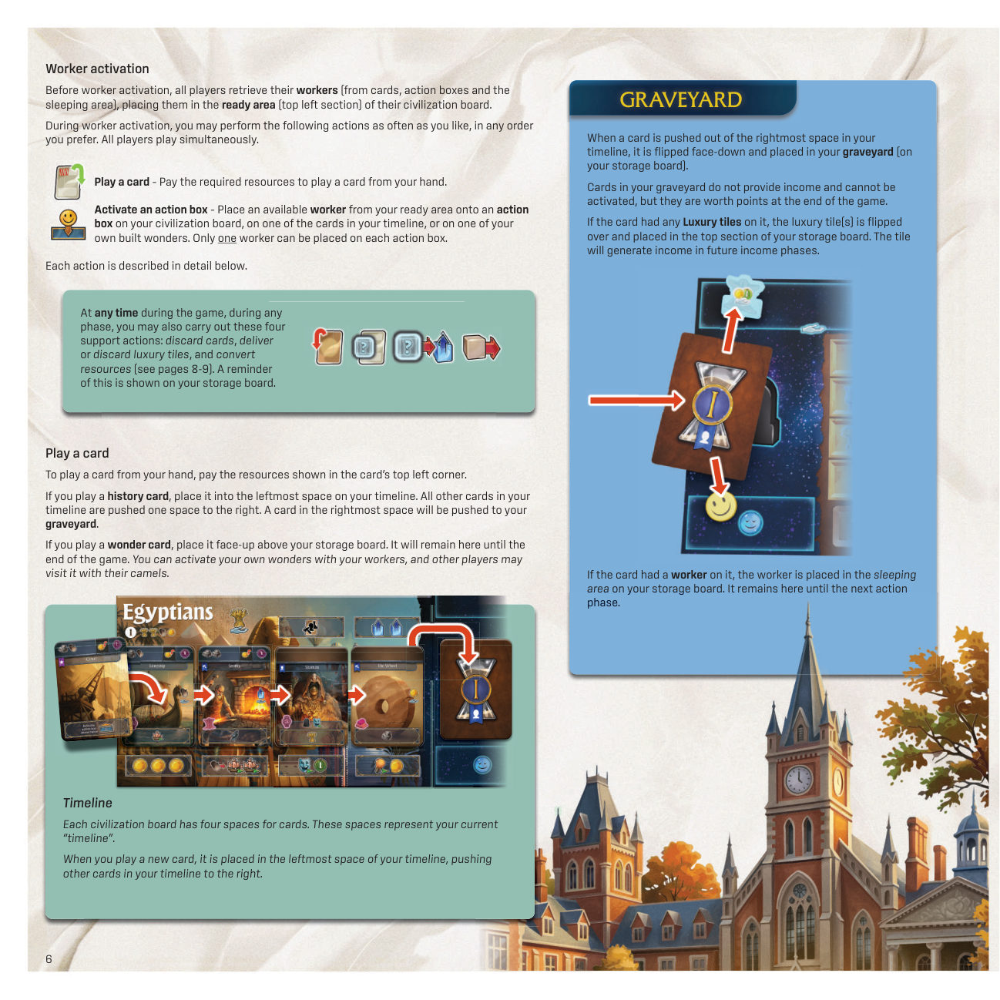
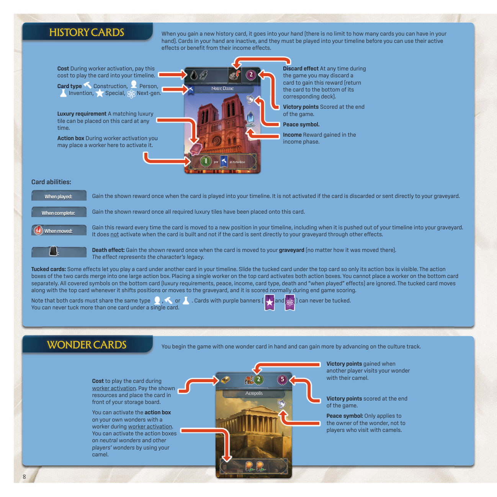
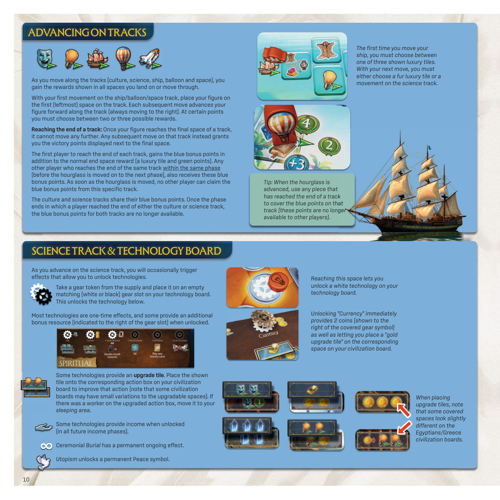
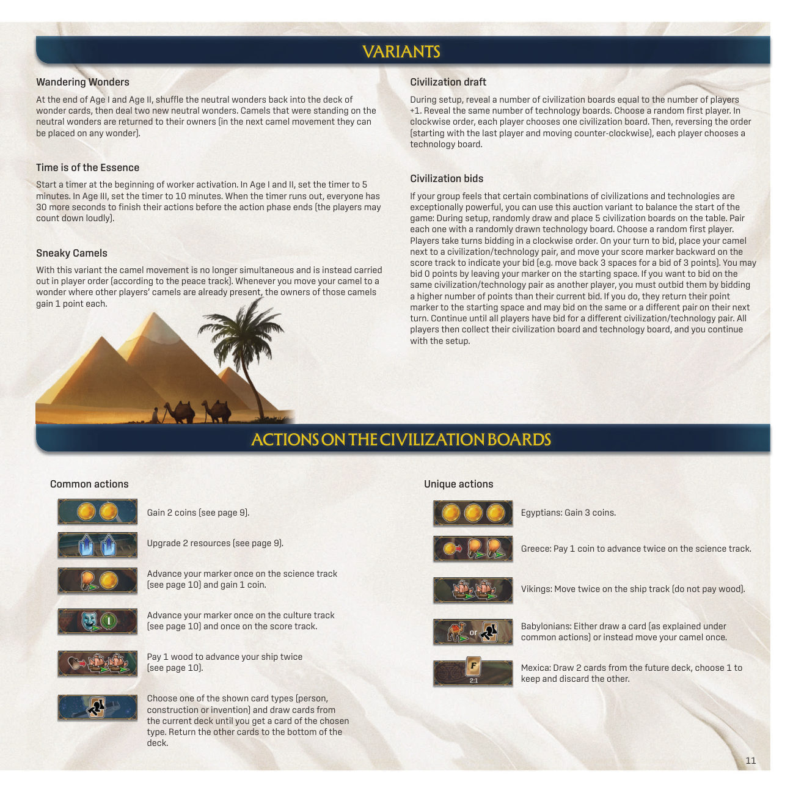

01游戏目标
率领你的文明穿越历史，从石器时代直到太空时代。你通过把卡牌打入自己的时间线（Timeline）、交付奢侈品、建造奇观，以及在各种轨道上前进获得分。第三个时代结束时，获得胜利分最多的玩家获胜。
02配件
原书并未单列配件清单，以下数量与名称均取自「设置」一节的叙述，未作任何推算或补充。
| 组件 | 数量 | 说明 |
|---|---|---|
| 游戏版图 | 1 块 | 背面印有较小的版图，桌面空间不足时使用 |
| 牌架 | — | 用于放置各时代的历史卡组，每叠放入对应的牌架 |
| 历史卡 | 144 张 | 分属时代 I、II、III、IV |
| 奇观卡 | 16 张 | 设置时抽出 2 张作为中立奇观 |
| 愿景卡 | 12 张 | 终局时评估相邻玩家的愿景卡 |
| 探索板块 | 56 张 | 分属时代 I、II、III |
| 奢侈品板块 | 108 张 | 公共供应；共六种：毛皮、陶器、丝绸、宝石、书籍、乌穆利姆 |
| 齿轮标记 | 24 个 | 放在科技板的齿轮槽上以解锁科技 |
| 工人 | 36 个 | 每位玩家起始取 3 个 |
| 升级板块 | 21 张 | 放在文明板的行动框上以强化该行动 |
| 文明板 | 6 块 | 每位玩家 1 块 |
| 科技板 | 6 块 | 每位玩家 1 块，放在文明板上方 |
| 储物板 | 每位玩家 1 块 | 放在文明板右侧 |
| 玩家标记 | 每位玩家 4 个 | 分数轨、文化轨、科技轨起始格各 1 个，和平轨第 1 格 1 个 |
| 资源方块 | 每位玩家 8 个 | 放在文明板的资源格与储物板底部的仓库 |
| 船、热气球、飞船、骆驼 | 每位玩家各 1 个 | 放在自己的储物板前 |
| 起始卡 | 每位玩家 3 张 | 萨满、火、轮子，背面标有“S”，正面朝上放入时间线 |
| 沙漏 | 1 个 | 放在时间轨上，标示当前时代与阶段 |
03设置
公共设置（A–H）
把游戏版图放在桌子中央。
- 按时代（I、II、III、IV）分出 144 张历史卡。分别洗匀，把每叠放入对应的牌架。
- 分别洗匀 16 张奇观卡与 12 张愿景卡，成两叠背面朝下放置。
- 抽两张奇观卡，正面朝上放在游戏版图中央的两个槽位中。这两张就是两张中立奇观。
- 把沙漏放在时间轨的第一格。
- 按时代（I、II、III）分拣 56 块探索板块。分别洗匀，成三叠背面朝下放在版图旁。
- 把 108 块奢侈品板块分类整理，作为公共供应放在版图旁。
- 把 24 个齿轮标记与 36 个工人分成两堆。
- 把 21 块升级板块分类整理，放在版图旁。

每位玩家的设置（I–P）
- 取 4 个你玩家颜色的玩家标记：在分数轨、文化轨、科技轨各自的起始格各放一个圆片。最后一个圆片放在和平轨第 1 格。
- 取 6 块文明板中的一块、6 块科技板中的一块（自行挑选，或随机抽取）。多余的板放回游戏盒。把你的科技板放在文明板上方。
- 把一块储物板放在文明板右侧。
- 取 8 个资源方块。按文明板左上角区域所示的起始资源，各放一个方块；剩余方块放入储物板底部的仓库。
- 取 1 个船、1 个热气球、1 个飞船、1 个骆驼，均为你所选的玩家颜色，放在储物板前。
- 把 3 张起始卡（起始卡背面标有“S”）放入你的时间线：把“萨满”（Shaman）、“火”（Fire）、“轮子”（Wheel）正面朝上放在对应的格子上（萨满对应标“S”的格，火对应“F”，轮子对应“W”）。
- 取 3 个工人，放在文明板上的待命区（左上区域）。
- 抽 2 张奇观卡与 2 张愿景卡：选择 1 张奇观卡与 1 张愿景卡留在手中。其余卡放回各自牌堆底部。手牌要对其他玩家保密。
维京文明起始时在船只轨上有 1 次移动：把你的船放在第一格（这次移动不领取任何奖励）。

04玩法概览
游戏进行三个时代，每个时代由若干交替进行的阶段组成：收入、探索与行动。沙漏在时间轨上的位置显示当前的时代与阶段。
在每个探索阶段，玩家按玩家顺序轮流行动；而在收入阶段与行动阶段，所有玩家同时行动。当所有玩家都完成了一个阶段，就把沙漏推进到时间轨的下一格。
以下规则先说明游戏的主要流程，随后介绍重要的游戏概念。

05核心概念
时代（Ages）
沙漏上方的数字表示当前时代。当游戏中的某个效果让你获得当前时代的一张历史卡或探索板块时，指的就是这个数字。如果某个效果让你获得未来时代的一张卡，意思是必须从下一个时代取卡。游戏开始时，当前时代是时代 I，而未来时代是时代 II。
时代 IV 的卡只能通过某些效果获得，或是在时代 III 期间作为未来卡获得。
和平与玩家顺序（Peace & Player Order）
和平轨上的玩家顺序在每个收入阶段都会重新计算，并决定接下来的探索阶段中的玩家顺序。玩家按和平从高到低依次行动。如果两名或更多玩家并列（或者他们都超过 10 和平），其顺序由文明板左上角所示的数字决定——数字小的先行动。
注意：在最初的探索阶段，所有玩家都是 1 和平，行动顺序完全由文明板上的数字决定。当玩家并列时，可以按文明板数字的顺序把他们的标记叠放在和平轨上（数字小的在上），以便清楚显示玩家顺序。
游戏中任何时候，只要某个行动涉及你的和平，就重新数一遍你游玩区当时可见的符号数量（最多 10）。
和平符号代表你的文明之内的和平与和谐。
墓地（Graveyard）
当一张卡被推出时间线最右侧的格子时，它翻面朝下，放入你的墓地（在储物板上）。
墓地中的卡不提供收入，也不能被激活，但在游戏结束时值分。
如果该卡上放有奢侈品板块，这些板块翻面，放在储物板的上部区域。该板块将在未来的收入阶段产生收入。
如果该卡上放有工人，该工人放入储物板上的休息区。它会一直留在那里，直到下一个行动阶段。

历史卡（History Cards）
当你获得一张新的历史卡，它进入你的手中（手牌数量没有上限）。手中的卡处于未激活状态，必须先被打入你的时间线，才能使用它们的主动效果或享受它们的收入效果。
卡面上的各项
- 费用
- 工人激活期间支付此费用，把该卡打入你的时间线。
- 卡牌类型
- 建筑（Construction）、人物（Person）、发明（Invention）、特殊（Special）、次世代（Next-gen）。
- 奢侈品需求
- 任何时候都可以把一张匹配的奢侈品板块放到该卡上。
- 行动框
- 工人激活期间，你可以在此放置一个工人来激活它。
- 弃掉效果
- 游戏中的任何时候，你都可以弃掉一张卡来获得此奖励（把该卡放回对应牌堆的底部）。
- 胜利分
- 在游戏结束时计分。
- 和平符号
- 计入你的和平总数。
- 收入
- 在收入阶段获得的奖励。
卡牌能力
- 打出时（When played）
- 当该卡被打入你的时间线时，获得一次所示的奖励。如果该卡被弃掉或被直接送入墓地，则不触发。
- 完成时（When complete）
- 当所有所需奢侈品板块都已放到该卡上之后，获得一次所示的奖励。
- 移动时（When moved）
- 每当该卡在你的时间线中移动到新位置时，获得此奖励，包括它被推出时间线进入墓地时。卡牌被建造（built）时不会触发，也不因其他效果被直接送入你的墓地而触发。
- 死亡效果（Death effect）
- 当该卡被移入墓地时（无论以何种方式移入），获得一次所示的奖励。该效果代表此人的遗产。
叠压卡（Tucked cards）
某些效果让你把一张卡压到时间线上另一张卡的下面。把叠压的卡滑到上面那张卡之下，只露出它的行动框。两张卡的行动框合并为一个大行动框。在上面那张卡上放一个工人，即可同时激活两个行动框。你不能单独在下面那张卡上放置工人。
下面那张卡上所有被遮住的符号（奢侈品需求、和平、收入、卡牌类型、死亡效果与“打出时”效果）都被忽略。叠压卡会随上面那张卡一起移动位置或进入墓地，并在终局计分时正常计分。
注意：两张卡必须属于同一类型（建筑、人物或发明）。带紫色横幅的卡（特殊与次世代）永远不能被叠压。一张卡下面永远不能叠压多于一张卡。
奇观卡（Wonder Cards）
你在游戏开始时手中有 1 张奇观卡，并且可以通过在文化轨上前进来获得更多。
- 费用
- 在工人激活期间打出该卡的费用。支付所示的资源，并把该卡放在你的储物板前。
- 行动框
- 在工人激活期间，你可以用工人激活你自己奇观上的行动框。你可以用自己的骆驼激活中立奇观与其他玩家奇观上的行动框。
- 访问胜利分
- 当另一位玩家用骆驼访问你的奇观时，你获得的胜利分。
- 终局胜利分
- 在游戏结束时计分。
- 和平符号
- 只对奇观的拥有者有效，对用骆驼访问的玩家无效。

资源（Resources）
当你获得一个资源，从你的仓库取一个方块，放进所获资源的格子。这个方块现在代表 1 个该类型的资源。每当你花费一个资源，就把它的方块放回你的仓库。仓库中的方块不算资源——把它们看作空箱子，代表你尚未使用的储存容量。
游戏中当你获得一个升级（upgrade）效果时，你可以把板上的一个方块向上移动一格（移到正上方那一格）。
转化资源：游戏中的任何时候，你都可以进行以下转化：
- 花 2 金币，获得 1 个基础资源（小麦、石头或木材）。
- 花 1 个已升级的资源，获得 1–3 个升级效果（如储物板右侧所示）。在领取升级效果之前，先把该方块放回仓库。
你的板上永远不能有超过 8 个资源方块。如果你获得的资源无法存放，你可以先花掉另一个方块换取它的升级效果（或把任意方块放回仓库），然后再取这个新资源；也可以直接放弃这个新资源。
例：温斯顿花 1 个金属换两个升级效果。他把一个小麦升级为绵羊，并把仓库中的一个方块升级为金币。
奢侈品板块（Luxury Tiles）
当你获得一个奢侈品板块，把它奢侈品面朝上放在文明板的待命区。游戏中的任何时候，你都可以用待命区的奢侈品板块做两件事之一：
- 弃掉该奢侈品板块，立即获得 1 个升级效果。
- 交付该奢侈品板块：把它放到你的时间线上需要该特定奢侈品的卡上。
每张卡只能放一个奢侈品板块，除非该卡明确需要两个（或更多）奢侈品板块（此时你可以随时分别交付其中一个或两个）。
放置奢侈品板块会永久强化该卡的效果：从此以后，每当你用工人激活该卡的行动框，你还会获得印在奢侈品板块右下角的奖励。奢侈品板块一旦放到卡上，就不能再被弃掉。
如果一张带有已交付奢侈品板块的卡被移入你的墓地，把该奢侈品板块翻面朝下，放在储物板最上方的区域。该板块将在未来所有收入阶段产生收入。
书籍奢侈品：如果你激活一张放有书籍板块的卡，你也会同时激活该卡下方（文明板上）的行动框。即使下方的行动框已经用工人激活过，你仍然可以激活它。因此，巧妙使用书籍可以让你在同一轮中多次激活文明板上的行动框。
每本移入墓地的书籍，在游戏剩余时间内额外提供 1 个和平符号。
轨道与推进（Advancing on Tracks）
当你沿轨道（文化、科技、船只、热气球与太空）前进时，你获得你停留或经过的所有格子上显示的奖励。
你在船只／热气球／太空轨上的第一次移动，是把棋子放在轨道的第一格（最左侧）。之后每一次移动都把棋子沿轨道向前推进（总是向右）。在某些位置，你必须在两三个可选奖励之间做出选择。
到达轨道尽头：一旦你的棋子到达某条轨道的最后一格，它就不能再前进。之后在这条轨上的任何移动，改为给予你显示在最后一格旁的胜利分。
每条轨道上第一个到达尽头的玩家，除正常的末格奖励（一个奢侈品板块与绿色分）之外，还获得蓝色奖励分。任何其他玩家，只要在同一阶段内（在沙漏被推进到下一阶段之前）到达同一条轨道的尽头，也获得这些蓝色奖励分。沙漏一旦推进，其他玩家就不能再领取这条轨道的蓝色奖励分。
文化与科技两条轨道共用它们的蓝色奖励分。一旦有玩家到达文化轨或科技轨尽头的那一个阶段结束，两条轨道的蓝色奖励分都不再可得。

科技轨与科技板（Science Track & Technology Board）
当你沿科技轨前进时，会不时触发让你解锁科技的效果。
从供应堆取一个齿轮标记，把它放在科技板上空的、匹配的（白色或黑色）齿轮槽中。这会解锁其下方的科技。
大多数科技是一次性效果，有些在解锁时还会提供一个额外的奖励资源（标在齿轮槽右侧）。
有些科技提供一块升级板块。把所示的板件放到你文明板上对应的行动框，以强化该行动（注意：某些文明板上可升级的位置会有细微差异）。如果被升级的行动框上原本有工人，把该工人移到你的休息区。
有些科技在解锁时提供收入（在未来所有收入阶段）。
“祭祀葬仪”（Ceremonial Burial）具有永久持续的效果。
“乌托邦主义”（Utopism）解锁一个永久的和平符号。
解锁“货币”（Currency）会立即提供 2 金币（显示在被覆盖的齿轮符号右侧），并让你在文明板对应的位置放一块“金币升级板块”。
放置升级板块时请注意：在埃及／希腊文明板上，某些被覆盖的格子看起来略有不同。
06一个回合
每个时代由收入、探索、行动三个阶段交替组成。一个阶段中所有玩家都完成后，沙漏前进一格，进入下一个阶段。
收入阶段
所有玩家同时获得其游玩区内所有可见的收入效果（印在文明板上的收入、时间线上卡牌上的收入、墓地中奢侈品板块上的收入，以及已激活科技上的收入）。
随后玩家调整自己在和平轨上的标记位置：数出你游玩区内所有可见的和平符号（和平主要来自已打出的奇观、时间线上的历史卡，以及墓地中的某些奢侈品板块）。把你的标记放在和平轨上与这个数字相符的格子上。然后每个和平符号得 1 分（你永远不会少于 0 分，也不会多于 10 分）。
探索阶段
在版图旁摆放若干个“组合包”（offer），使用当前时代的卡牌与探索板块（游戏开始时为时代 I）。组合包的数量应当比玩家数量多 1。
每个组合包由 1 张背面朝下的历史卡、1 张正面朝上的历史卡与 1 张正面朝上的探索板块组成。背面朝下的卡，其背面的卡牌类型符号应当可见。
按玩家顺序，每位玩家挑选其中一个组合包。把两张卡加入手牌，并立即获得探索板块上显示的奖励。然后把该探索板块放回它那一叠的底部。当所有玩家都取走一个组合包后，弃掉剩下未被选中的组合包（把它的卡牌／板块放回对应的牌堆／叠底部）。

行动阶段
行动阶段以骆驼移动开始，随后是工人激活。
所有玩家同时进行，但在所有人都移动完自己的骆驼之前，任何人都不应开始工人激活。
行动 A骆驼移动
每位玩家移动自己的骆驼一次。
你可以把骆驼移到两张中立奇观之一或集市（在版图上），也可以移到其他玩家已建造的任意奇观（游戏开始时不可能做到）。
你永远不能把骆驼移到自己的奇观之一。
你必须始终把骆驼移到与它当前所在位置不同的位置（你永远不能连续两次访问同一座奇观）。多只骆驼可以访问同一座奇观。
如果你访问两张中立奇观之一，你必须支付 1 金币（如版图所示）。
如果你访问属于另一位玩家的奇观，该玩家获得 2 胜利分（如奇观卡顶部所示）。
立即获得所选奇观／集市的行动框中显示的效果。
· 1 金币与 1 块毛皮奢侈品板块
· 1 分与 1 块陶器奢侈品板块
· 1 块丝绸奢侈品板块
行动 B工人激活
在工人激活之前，所有玩家收回自己的工人（从卡牌上、行动框上和休息区），并把它们放回自己文明板的待命区（左上区域）。
在工人激活期间，你可以按任意顺序、任意次数执行以下行动。所有玩家同时进行。
- 打出一张卡牌——支付所需资源，从手中打出一张卡。
- 激活一个行动框——把待命区中一个可用的工人放到你文明板上的一个行动框、你时间线上某张卡的行动框，或你自己已建造的某座奇观的行动框上。每个行动框只能放一个工人。
这两项在同一工人激活期间可任意交错、重复执行，没有先后顺序。细节见下文。
打出一张卡牌
要从手中打出一张卡，支付该卡左上角所示的资源。
如果你打出的是历史卡，把它放进你时间线最左侧的格子。时间线上所有其他卡都向右推一格。位于最右侧格子中的卡会被推入你的墓地。
如果你打出的是奇观卡，把它正面朝上放在你的储物板上方。它会一直留在那里直到游戏结束。你可以用工人激活自己的奇观，其他玩家可以用他们的骆驼来访问它。
时间线（Timeline）
每块文明板上有四个放卡的位置。这些位置代表你当前的“时间线”。
当你打出一张新卡，它被放入时间线最左侧的格子，把时间线上其他卡向右推。
行动 B 续激活一个行动框
你已打出的卡（历史卡与奇观）上以及你的文明板上都有行动框。
把你不使用的一个工人放到行动框上即可激活它，并获得所示的奖励。
每个行动框只能放一个工人。
如果你激活的卡上放有奢侈品板块，你还会获得奢侈品板块右下角所示的奖励。
所有效果都是可选的，你可以按自己想要的任意顺序领取奖励。
行动阶段结束与时代交替
当所有玩家都完成了自己的工人激活，把沙漏推进到下一个阶段。
时代 II 结束：在第四个行动阶段结束时（时代 III 开始时），每位玩家必须把这块升级板块翻到它的飞船面。
07计分
第五个行动阶段之后游戏结束，所有玩家进行最终计分。以下各项按顺序结算。
- 和平更新和平轨，你游玩区内每个可见的和平符号得 1 分（最多 10 个）。
- 收入从你所有的收入符号获得收入。但是，凡是通常会让你在轨道（文化、科技、船只或热气球）上前进的收入，改为提供 1 胜利分。
- 金币你储物中的每 1 金币得 2 分（此时你可以照常弃掉剩余的卡牌与奢侈品板块，并转化资源）。
- 乌穆利姆奢侈品你时间线与墓地中每块已交付的乌穆利姆奢侈品板块得 3 分。
- 卡牌你所有已打出卡牌右上角所示的胜利分（包括已打出的奇观卡，以及时间线与墓地中的全部历史卡）。
- 愿景评估与你相邻的两张愿景卡（你左侧一张、右侧一张）。对每张你满足其要求的卡，获得所示的分数。
08结束与胜负
第五个行动阶段之后，游戏结束，所有玩家完成上述最终计分。
分最多的玩家获胜。
如果出现平局，则在和平轨上更靠前的并列玩家获胜。如果仍然平局，则文明板编号最小的并列玩家获胜。
09特殊说明
变体（Variants）
游荡的奇观（Wandering Wonders）
在时代 I 与时代 II 结束时，把中立奇观洗回奇观卡牌堆，然后重新发两张新的中立奇观。原本站在中立奇观上的骆驼归还给它们的主人（在下一次骆驼移动时，它们可以被放到任意奇观）。
时间紧迫（Time is of the Essence）
在工人激活开始时启动一个计时器。时代 I 与时代 II 把计时器设为 5 分钟，时代 III 设为 10 分钟。计时结束时，每个人都还有 30 秒完成自己的行动，然后行动阶段结束（玩家可以大声倒数）。
狡猾的骆驼（Sneaky Camels）
使用此变体时，骆驼移动不再同时进行，而是按玩家顺序（依据和平轨）依次进行。每当你把骆驼移到已有其他玩家骆驼在场的奇观时，那些骆驼的主人各得 1 分。
文明轮抽（Civilization draft）
在设置时，翻开与玩家数量 +1 相等数量的文明板，并翻开同等数量的科技板。随机选出一名起始玩家。按顺时针顺序，每位玩家选择一块文明板。然后按相反的顺序（从最后一名玩家开始，逆时针进行），每位玩家选择一块科技板。
文明竞价（Civilization bids）
如果你的群体觉得某些文明与科技的组合格外强大，可以用这个拍卖变体来平衡开局：在设置时，随机抽取 5 块文明板放在桌上，各配上一块随机抽取的科技板。随机选出一名起始玩家。玩家按顺时针顺序轮流竞价。轮到你竞价时，把你的骆驼放到某个文明／科技组合旁，并把你的计分标记在分数轨上向后退，以表示你的出价（例如出价 3 分就后退 3 格）。把标记留在起始格即表示出价 0 分。如果你想和另一位玩家竞同一个文明／科技组合，你必须出比对方当前出价更高的分。如果你这样做，对方把计分标记退回起始格，并可在其下一回合对同一个或另一个组合出价。持续进行，直到所有玩家各自竞价到不同的文明／科技组合。随后所有玩家领取自己的文明板与科技板，继续完成设置。
文明板上的行动（Actions on the Civilization Boards）
通用行动
- 获得 2 金币（见第 9 页）。
- 升级 2 个资源（见第 9 页）。
- 在科技轨上前进一次（见第 10 页），并获得 1 金币。
- 在文化轨上前进一次（见第 10 页），并在分数轨上前进一次。
- 支付 1 木材，让你的船前进两次（见第 10 页）。
- 选择所示的卡牌类型之一（人物、建筑或发明），从当前牌堆抽牌，直到抽到所选类型的卡。其余卡放回牌堆底部。
独特行动
- 埃及：获得 3 金币。
- 希腊：支付 1 金币，在科技轨上前进两次。
- 维京：在船只轨上移动两次（不支付木材）。
- 巴比伦：抽一张卡（如通用行动中所述），或改为移动你的骆驼一次。
- 墨西加：从未来牌堆抽 2 张卡，选 1 张留下，弃掉另一张。

其他需要留意之处
- 单人游戏：单人游戏的改动写在参考表最后一页。
- 中国文明与维京文明有额外的起始差异，见「设置」一节。
- 叠压限制：只有同类型（建筑、人物、发明）的卡可以叠压；特殊与次世代不可叠压；一张卡下最多压一张卡。
- 和平上限：和平标记最高只到 10，超过的部分忽略；收入阶段的计分同样上限 10。
10提示
以下均为原书中明确标为提示、或作为新手建议给出的内容。
盖住已失效的蓝色奖励分
当沙漏被推进时，用任何已到达某条轨道尽头的棋子盖住那条轨道上的蓝色分（这些分对其他玩家来说已不再可得）。
第一次游戏可以更简单
第一次游戏时（以及带新玩家游戏时），可以直接给每位玩家随机发 1 张奇观卡，并在每两位玩家之间放 1 张随机愿景卡。
第一次游戏可以放慢节奏
如果这是你的第一次游戏，或者你在带新玩家游戏，可以按玩家顺序逐个轮流激活工人——这有助于大家熟悉游戏的运作方式。
放置升级板块时留意文明差异
放置升级板块时请注意：某些被覆盖的格子，在埃及／希腊文明板上看起来略有不同。
首次移动船只的取舍
第一次移动你的船时，你必须在三个所示的奢侈品板块中选择一个。下一次移动时，你必须选择一张毛皮奢侈品板块，或者在科技轨上移动一次。
11制作名单
设计师的话
在历史的大部分时间里，追求艺术或科学都是一种奢侈品，并非人人负担得起、或有机会触及。在经济上或政治上受压迫的人——例如文化少数群体、广义上的女性，以及被殖民压迫的人——在这些领域留下自己印记的机会本就更少，因此在大量有记载的历史中代表性不足。我们努力在游戏中纳入广泛的历史人物，但也不想假装这种压迫从未发生。我们来自挪威这样一个北欧小国，完全清楚我们的游戏是建立在西方视角之上的。尽管如此，我们的目标始终是做一款尊重他人、活泼而愉快的游戏，让你率领自己的文明，走过属于你自己的那一段历史。我们祝愿你在我们的游戏中收获许多快乐而和平的体验。
—— Kristian & Kenneth
致谢
我们也要感谢所有测试过或为游戏做出贡献的人，包括 Morten Pedersen、Lars Tombre、Sturla Johansen、Helene Forberg、Helge Meissner、Anna Wermlund、William Attia、Piet Skjæveland、Ragnhild Lode、Andreas Veggeland、Kjetil Sjursen、Jørgen Brunborg Næss、Håvard Hauge、Brage Galtestad、Bård Sverre Tuseth、Lars Schee、Carl Gustav Lind、Paul Christoffer Hansen、Anders Skavdal Halvdal、Espen Skovdahl、Isabella Ludviksen、Tone Glomsrud、Gustav Smedal、Emilie Minde、Elias Minde、Alexander Bjølgerud、Andre Hansen、Anders Røynås、Gaute Marsteintrædet、Oliver Karlsen、Tor Einar Lomeland、Steinar Watne、Erlend Hove Lillebø、Thor Egil Braadland、Odd Nilsen、Jørgen Ulvan Moe、Richard Trout、Silje Taranger Knutsen 与 Stian Haugen。我们爱你们所有人。最后，我们要向我们的伴侣 Liv Minde 与 Marianne Ringås 表达感谢：做一款游戏是一段漫长而全情投入的旅程，她们以耐心、鼓励与爱，陪我们度过了每一个深夜、每一次重新设计、每一个自我怀疑的时刻。
我们要特别感谢 Tor Helge Huse、Kristian Brustad 与 Helge Rege Gårdsvoll，他们为游戏的开发与测试做出了大量贡献。
制作人员
想自己 3D 打印配件吗？请在这里找到你需要的文件。